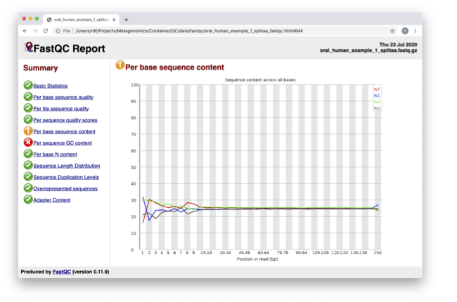
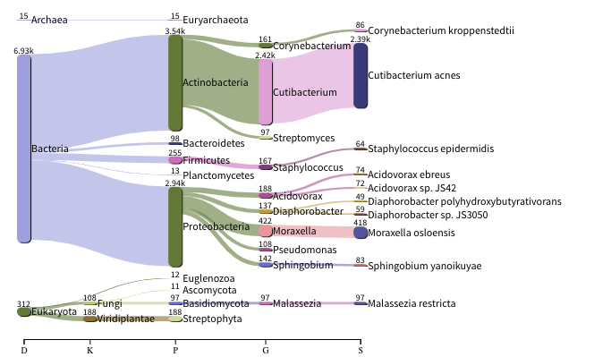
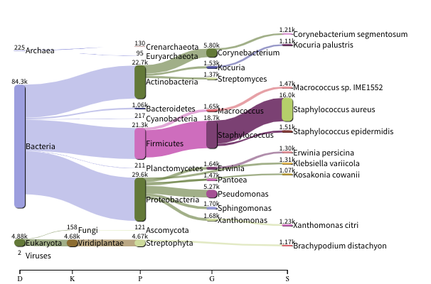

Quality control and filtering of the raw sequence files
Jennifer Lu ![]()
Varsha Kale
Prerequisites
These instructions are for the course VM. To run externally, please refer to the section at the end.
For this tutorial, you’ll need to move into the working directory and start a Docker container. Set the variable DATADIR as instructed.
cd /home/training/quality
chmod -R 777 /home/training/quality
export DATADIR=/home/training/quality
xhost +You will get the message “access control disabled, clients can connect from any host” Now start the Docker container:
docker run --rm -it -e DISPLAY=$DISPLAY -v $DATADIR:/opt/data -v /tmp/.X11-unix:/tmp/.X11-unix:rw -e DISPLAY=unix$DISPLAY microbiomeinformatics/biata-qc-assembly:v2021Quality control and filtering of the raw sequence files
In the following exercises, you’ll learn how to check the quality of short read sequences, identify adaptor sequences, remove adapters and low-quality sequences, and construct a reference database for host decontamination.
These are the files we’ll use for the practical. Move into the folder:
ls /opt/data
cd /opt/dataNavigate to Home → quality → fastqc_results
Right-click on file oral_human_example_1_splitaa_fastqc.html, select ‘open with other application’, and open with Firefox.

Spend some time looking at the ‘Per base sequence quality.’
For each position, a BoxWhisker-type plot is drawn:
- The central red line is the median value.
- The yellow box represents the inter-quartile range (25-75%).
- The upper and lower whiskers represent the 10% and 90% points.
- The blue line represents the mean quality.
The y-axis on the graph shows the quality scores. The higher the score, the better the base call. The background of the graph divides the y-axis into very good quality calls (green), calls of reasonable quality (orange), and calls of poor quality (red). The quality of calls on most platforms will degrade as the run progresses, so it’s common to see base calls falling into the orange area towards the end of a read.
In the pre-processed files, we see two warnings, as shown on the left side of the report. Navigate to the “Per bases sequence content.”

For more information on the FastQC report, please consult the ‘Documentation’ available from this site: FastQC Documentation
We are currently only looking at two files, but often we want to look at many files. The tool multiqc aggregates the FastQC results across many samples and creates a single report for easy comparison. Here we will demonstrate the use of this tool.
In this case, we provide the folder containing the FastQC results to multiqc, and the -o allows us to set the output directory for this summarized report.
So far we have looked at the raw files and assessed their content, but we have not done anything about removing duplicates, sequences with low quality scores, or removal of the adaptors. So, let’s start this process. The first step in the process is to make a database relevant for decontaminating the sample. It is always good to routinely screen for human DNA (which may come from the host and/or staff performing the experiment). However, if the sample is from a mouse, you would want to download the mouse genome.
In the following exercise, we are going to use two “genomes” already downloaded for you in the decontamination folder. To make this tutorial quicker and smaller in terms of file sizes, we are going to use PhiX (a common spike in) and just chromosome 10 from human.
For the next step, we need one file, so we want to merge the two different fasta files. This is simply done using the command-line tool cat.
Now we need to build a bowtie index for them:
It is possible to automatically download a pre-indexed human genome in Bowtie2 format using the following command (but DO NOT do this now, as this will take a while to download):
kneaddata_database –download human_genome bowtie2
Now we are going to use the GRCh38_phix database and clean up our raw sequences. kneaddata is a helpful wrapper script for a number of pre-processing tools, including Bowtie2 to screen out contaminant sequences, and Trimmomatic to exclude low-quality sequences. We also have written wrapper scripts to run these tools (see below), but using kneaddata allows for more flexibility in options.
We now need to uncompress the fastq files.
The options above are:
--input, Input FASTQ file. This option is given twice as we have paired-end data.--output, Output directory.--reference-db, Path to Bowtie2 database for decontamination.-t, Number of threads to use (2 in this case).--trimmomatic-options, Options for Trimmomatic to use, in quotations.--bowtie2-options, Options for Bowtie2 to use, in quotations.--remove-intermediate-output, Intermediate files, including large FASTQs, will be removed.
Kneaddata generates multiple outputs in the “clean” directory, containing different four different files for each read.
To generate a summary file of how the sequences were categorized by Kneaddata, run the following command.
The reads have now been decontaminated and can be uploaded to ENA, one of the INSDC members. It is beyond the scope of this course to include a tutorial on how to submit to ENA, but there is additional information available on how to do this in this Online Training guide provided by EMBL-EBI
Assembly PhiX decontamination
In the following exercises, you will generate a PhiX blast database and run a blast search with a subset of assembled freshwater sediment metagenomic reads to identify contamination.
PhiX, used in the previous section of this practical, is a small bacteriophage genome typically used as a calibration control in sequencing runs. Most library preparations will use PhiX at low concentrations; however, it can still appear in the sequencing run. If not filtered out, PhiX can form small spurious contigs that could be incorrectly classified as diversity.
Prepare the freshwater sediment example assembly file and search against the new blast database. This assembly file contains only a subset of the contigs for the purpose of this practical.
The blast options are:
-query, Input assembly fasta file.-out, Output file-db, Path to blast database.-task, Search type -“megablast”, for very similar sequences (e.g, sequencing errors)-word_size, Length of initial exact match
Now that PhiX contamination was identified, it is important to remove these contigs from the assembly file before further analysis or upload to public archives.
Using Negative Controls
This exercise will look at the analysis of negative controls. You will assess the microbial diversity between a negative control and a skin sample.
The images below show the taxonomic classification of two samples: a reagent negative control and a skin metagenomic sample. The skin sample is taken from the antecubital fossa - the elbow crease, which is moist and site of high microbial diversity. The classification was performed with kraken2. Kraken2 takes a while to run, so we have done this for you and plotted the results. An example of the command used to do this. DO NOT run this now:
kraken2 --db standard_db --threshold 0.10 --threads 8 --use-names --fastq-input --report out.report --gzip-compressed in_1.fastq.gz in_2.fastq.gzSee the kraken2 manual for more information
See Pavian manual for the plots.
The following image shows the microbial abundance in the negative control: 
The following image shows the microbial abundance in the skin sample: 
If you have finished the practical you can try this step for more practice assessing and trimming datasets, there is another set of raw reads called “skin_example_aa” from the skin metagenome available. These will require a fastqc or multiqc report, followed by trimming and mapping to the reference database with kneaddata. Using what you have learned previously, construct the relevant commands. Remember to check the quality before and after trimming.
Consider other trimmomatic options from the manual e.g. “ILLUMINACLIP”, where /opt/data/NexteraPE-PE is a file of adapters.
Remember you will need to run the following command to view any html files in the VM browsers:
chown 1001 foldername/*.htmlRunning the practical externally
We need to first fetch the practical datasets.
wget http://ftp.ebi.ac.uk/pub/databases/metagenomics/mgnify_courses/ebi_2020/quality.tar.gz
or
rsync -av --partial --progress rsync://ftp.ebi.ac.uk/pub/databases/metagenomics/mgnify_courses/ebi_2020/quality.tar.gz .Once downloaded, extract the files from the tarball:
tar -xzvf quality.tar.gzWe also need the trimmomatic binary
cd quality
wget http://www.usadellab.org/cms/uploads/supplementary/Trimmomatic/Trimmomatic-0.39.zip
unzip Trimmomatic-0.39.zip
cd ..Now pull the docker container and set the above quality directory as DATADIR.
docker pull microbiomeinformatics/biata-qc-assembly:v2021
export DATADIR={path to quality directory}
xhost +You will see the message “access control disabled, clients can connect from any host”
docker run --rm -it -e DISPLAY=$DISPLAY -v $DATADIR:/opt/data -v /tmp/.X11-unix:/tmp/.X11-unix:rw -e DISPLAY=unix$DISPLAY microbiomeinformatics/biata-qc-assembly:v2021The container has the following tools installed: - kneaddata - fastqc - multiqc - blast - bowtie-2
You can now continue this practical from the section “Quality control and filtering of the raw sequence files”